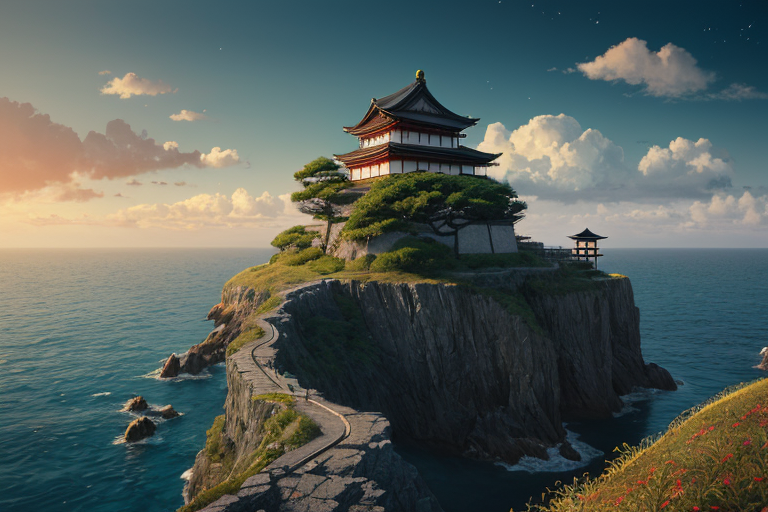
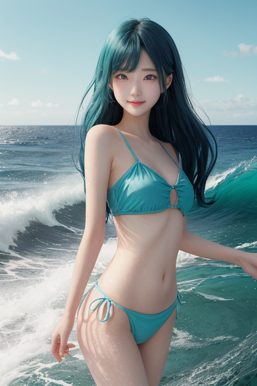
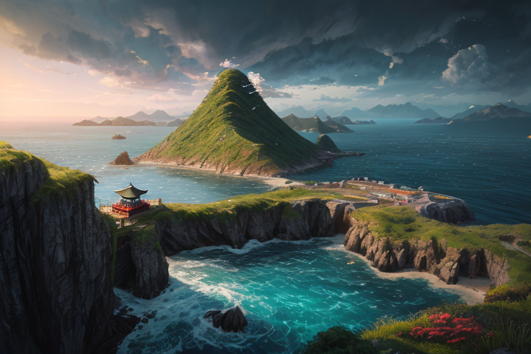
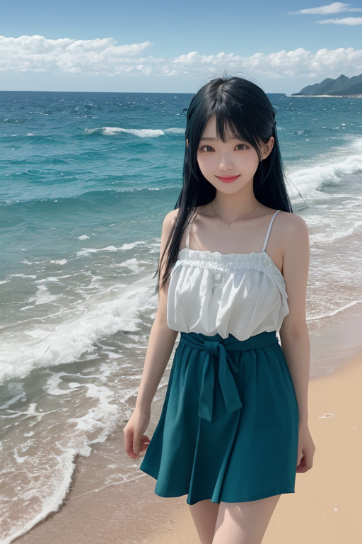

第一章「現実の高知」
あなたはまだ気づいていない。この土地にも、王がいることを。
太平洋の黒潮がぶつかる室戸岬。ここは列島の南境、世界の境界線だ。荒々しい風が絶え間なく吹き、打ち寄せる波は、この土地が常に外と接していることを告げている。高知は、山に囲まれ、海に開かれた、閉じられない場所である。四万十川の清流は、その閉じられなさを内陸へと運び、仁淀川のブルーは、外界への憧れを湛えている。
この土地の自由は、地理的な宿命から始まった。鎖国下にあっても、異国の船は時折、この岬に姿を現した。内と外の狭間。ここに生きるとは、常に風を受け、境界に立つことだった。坂本龍馬が海の向こうに夢を見たのも、自由民権運動の機運がこの地で育まれたのも、偶然ではない。自由は、この土地に与えられた、あるいは課せられた、孤独な条件だった。
海原を睨む桂浜の坂本龍馬像は、背中を海風に曝している。彼は仲間を見つけ、船を手にした。だが、その視線の先には、仲間のいない広大な海原が、ただただ広がっている。

第二章 歪みの兆候
室戸岬の灯台が、濃い霧に覆われ始めた。南から流れ込む異質な暖流が、四国沖の海流を乱し、通常とは異なる湿り気を運んでくる。それは、遠い南の海で生じた小さな「歪み」が、境界線に位置するこの岬に、最初の兆候として現れたものだった。
奔王コウチリア・フリーダムは、岬の断崖に立ち、肌でその変化を感じ取った。自由とは、時にこうした予測不能な外部からの影響に、真っ先に晒されることでもある。主席妖精フリダと海豪妖精カツオラは、既に沖へと飛び出し、乱れ始めた海流のデータを収集していた。彼らの豪快な笑い声が風に乗るが、その仕事ぶりは精密を極める。
「よっしゃ、この暖かみは尋常じゃないなあ！」
「本流を押しのける力がある。放置すれば、沿岸の生態系に影響が出る」
王は無言で仁淀川の清流を思い浮かべた。外から入り込むもの、内から溢れ出るもの。その狭間でバランスを取ることが、この土地に与えられた役目だった。自由の代償としての孤独が、彼の胸に、かすかな重みとして降りてきた。

第三章 王の葛藤
室戸岬の断崖に立ち、奔王は黒潮の奔流を見つめていた。外洋からもたらされる膨大な熱は、時に暴風雨を育て、時に不漁をもたらす。彼の役目は、その流入を完全に止めることではなく、ほんの少し角度を変え、沿岸に与える衝撃を和らげることだ。自由に流れ込むものと、内側を守ることの狭間。彼はその調整を、千年にわたり繰り返してきた。
「王よ、何を思う？」
フリダが傍らに現れた。彼女の声には、いつもの豪快さの裏に、微かな気遣いが滲んでいた。
「自由とは、この海原の如きものか」奔王は呟く。「何ものにも遮られず、ただ己が流れのままに。だが、流れは常に他者と衝突し、自らも傷つける。果てしない孤独ではないか」
彼は坂本龍馬が海を渡った志を、この地で育まれた自由民権運動の熱を思った。外の風を受け入れ、内なる熱を外へ解き放とうとするエネルギー。その全てが、この境界の地に集約され、時に歪みとなる。彼は感情を持たぬ存在として生まれた。今、胸に湧くこの重い逡巡は、この土地が彼に与えた「進化」なのか、それとも「負荷」なのか。
彼は答えを出さず、ただ岬の風に身を任せた。

第四章 妖精との対話
室戸岬の荒波が岩を砕く音が、絶え間なく響いていた。奔王の傍らで、主席妖精のフリダが酒盃を傾けた。土佐の酒は、海風に混じって渋く香った。
「自由ってな、王よ」フリダは遠く水平線を見つめながら言った。「外の広い海に出ていくことやと思う。わしらが補正する海流みたいに、流れに身を任せて、どこへでも行けることや」
彼女の隣で、地域特化妖精のカツオラが、火のついたような赤い肌を潮風にさらしていた。「だがな、奔王。流れに任せてばかりでは、陸（くに）が見えん。流されっぱなしでは、どこにも着けん」
フリダが大きく頷いた。「そや。出会いがあれば、別れがある。港を離れる自由があれば、港の灯りを懐かしむ孤独もある。この岬から船出した者も、皆、そうだったやろ」
奔王は黙って聞いていた。坂本龍馬も、海の向こうに志を求め、そしてこの地を離れた。自由とは、確かに孤独への船出かもしれない。しかし、妖精たちの言葉には、どこか達観した温かさがあった。彼らは、出会いと別れの繰り返しそのものが、この境界の海原の呼吸だと言うのだ。
「調整は、流れを止めんことや」カツオラが呟いた。「ただ、ほんの少し、流れ着く先に『縁』ができるよう、微力に手を貸すだけや」
奔王は、掌を開いた。そこには、見えない海流のわずかな「歪み」が感じられた。彼はそれを、静かに整え始めた。
第五章 微調整と余韻
室戸岬の灯台の光が、闇を切り裂く。その光の下で、奔王は掌を合わせた。見えない歪みは、人の縁の流れに重なっていた。遠く離れた港町で、一人の漁師が、不漁に嘆いていた。奔王は、海流をほんの少し、ほんのわずかだけ東へずらした。それは、漁師の網にかかる魚の種類を変えるほどの微調整だ。
次の日、漁師は、珍しい外洋魚を水揚げした。それは港で働く、言葉のわからない外国人労働者の故郷の味だった。二人は身振り手振りで会話し、漁師はその魚を譲った。労働者は、涙を流して感謝した。それは、深い孤独を癒す、小さな邂逅だった。
奔王は、岬の岩場に座り、潮風に吹かれていた。自由とは、このようにして生まれる、無数の小さな縁の総和なのか。孤独は、その縁を求める原動力なのか。彼にはまだ答えは出ない。ただ、この海原のように、出会いと別れを繰り返すこと自体が、自由という名の旅路なのだと、感じ始めていた。
あなたの町にも、王がいる。